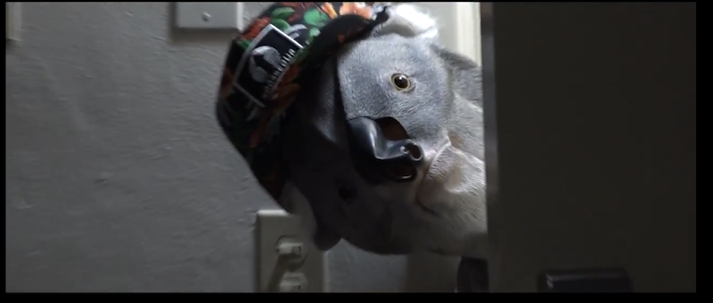
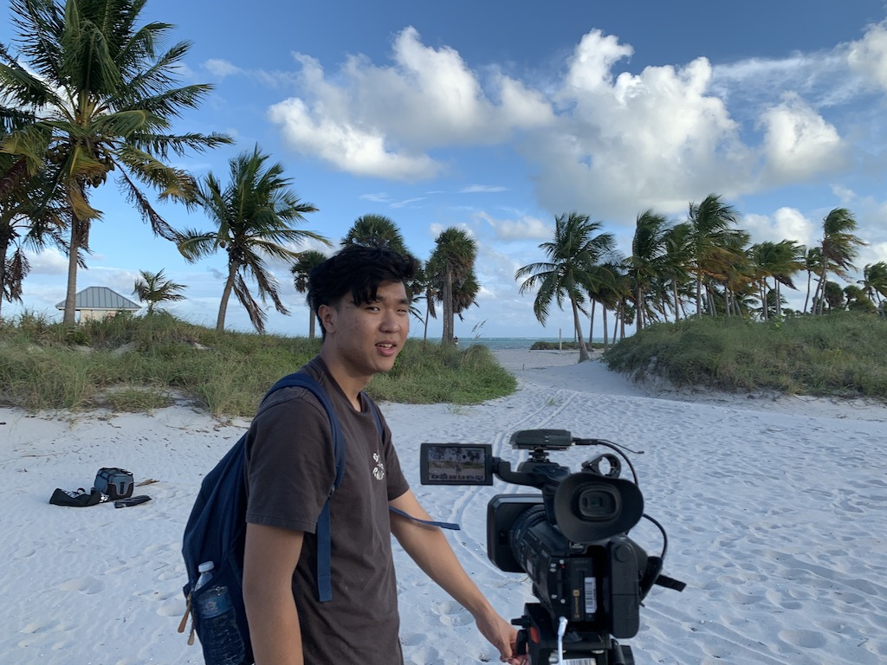

Benjamin Sasportas- A Director
Freshman Year Projects
Sophomore Year Projects
Quarantine Projects
Writer
Actor
Major Directing Credits
The Mad House

This was the first short film I directed in college. While filming, I was still mastering how to use a new camera, but this film taught me a lot about getting coverage. I realized it's always better to have more footage than less.
Rewrites
This was my first feature film, and I co-directed it with a friend. Co-directing proved to be challenging at times, as we often had different ideas for how to stage scenes. However, this was a great learning experience for me as I learned first hand how important it is to be collaborative on set.
Matchmaker in College
